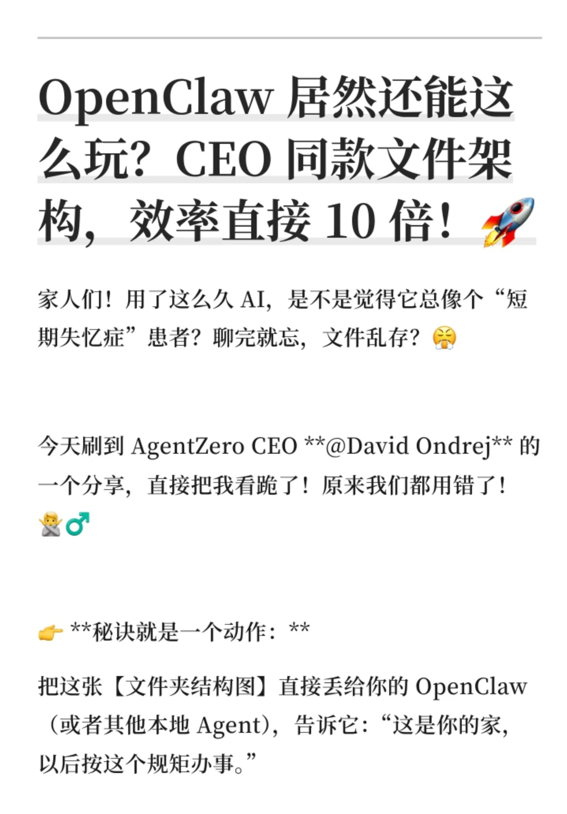
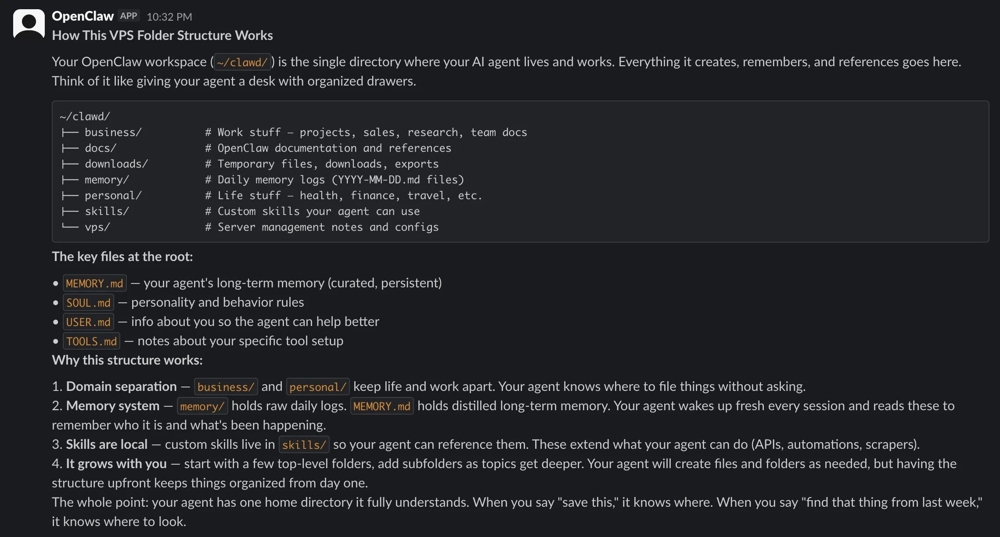
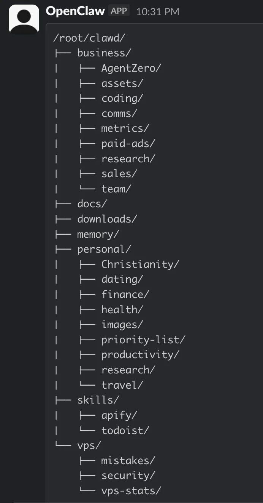

家人们！用了这么久 AI，是不是觉得它总像个“短期失忆症”患者？聊完就忘，文件乱存？😤
今天刷到 AgentZero CEO **@David Ondrej** 的一个分享，直接把我看跪了！原来我们都用错了！🙅♂️
👉 **秘诀就是一个动作：**
把这张【文件夹结构图】直接丢给你的 OpenClaw（或者其他本地 Agent），告诉它：“这是你的家，以后按这个规矩办事。”
**✨ 为什么这张图能让 AI 效率暴涨 10 倍？**
1. **🧠 长短期记忆分离 (Memory System)：**
* `memory/`：像日记一样记录每天的流水账。
* `MEMORY.md`：提炼精华，这是它的“长期记忆”，让它越用越懂你！
2. **💼 公私分明 (Domain Separation)：**
* `business/` 和 `personal/` 分开。工作时它是顶级秘书，生活里它是贴心管家，绝不串味！
3. **🧘♂️ 注入灵魂 (SOUL.md)：**
* 在这个文件里定义它的性格、行为准则。它不再是冷冰冰的机器，而是你的专属 Partner！
💡 **实测体验：**
配置完这个结构后，我对它说“把上周那个项目存一下”，它再也不会问“存哪？”，而是直接归档到 `business/projects`！这种默契感简直绝了！😭
**👨💻 大佬背书：**
这个方法来自 **David Ondrej**（AgentZero CEO），绝对的 AI Agent 圈顶流大神！跟着大佬学，准没错！
👇 **图在后面，建议收藏直接喂给你的 AI！**
#AI #OpenClaw #效率工具 #黑科技 #程序员 #AgentZero #生产力 #DavidOndrej #AIAgent


